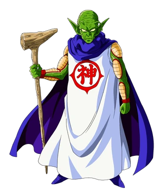

Bad ending
Seguiste escalando, ves que el tramo de la columna desaparece y hay una enorme estructura arriba como a 200 metros, aún así intentaste saltar con todas tus fuerzas. Olvidaste que volar solo pueden hacerlo aquellos que son guerreros Z.
Caes de nuevo a la tierra Santa (sorprendentemente no te haces daño). Quizá debas conseguir algún objeto que te permita subir. Fin del trayecto.
Volver